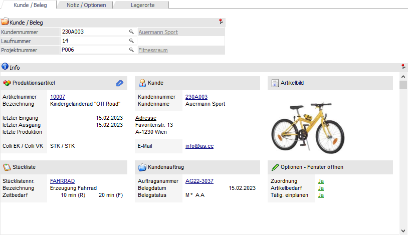
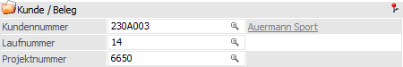
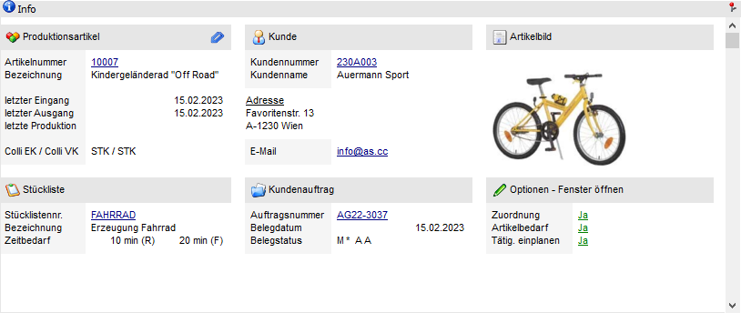

Im Register "Kunde / Beleg" der Produktionsvorbereitung kann u.a. die Zuordnung zu einem Kunden vorgenommen werden.
Hinweis
Alle Zuordnungen können auch noch im Nachhinein über das Fenster Arbeitsschrittstatus erfolgen.

Folgende Eingabefelder, Einstellungen und Information stehen zur Verfügung:
Kunde / Beleg

Ø Kundennummer
In diesem Feld kann eine Kundennummer eingegeben werden, welche dem Produktionsauftrag zugeordnet werden soll.
Ø Laufnummer
In diesem Feld kann die Laufnummer eines Beleges eingeben werden, welche dem Produktionsauftrag zugeordnet werden soll. Zuvor sollte das Feld "Kundennummer" gefüllt worden sein!
Ø Projektnummer
An dieser Stelle kann für den Produktionsauftrag ein Projekt hinterlegt werden. Über den Matchcode kann ein bestehendes Projekt aus der WinLine FAKT gesucht werden.
Info

In diesem Informationsbereich werden Daten zum Produktionsartikel (inkl. Bild), der Stückliste, dem Kunden und dem Auftrag ausgewiesen.
Über den Bereich "Optionen - Fenster öffnen" werden nicht nur die weiteren Einplanungsbereiche angezeigt, sondern via DrillDown kann eine temporäre Steuerung (für den aktuellen Produktionsauftrag) vorgenommen werden (nähere Informationen entnehmen Sie bitte dem Register Notiz / Optionen).